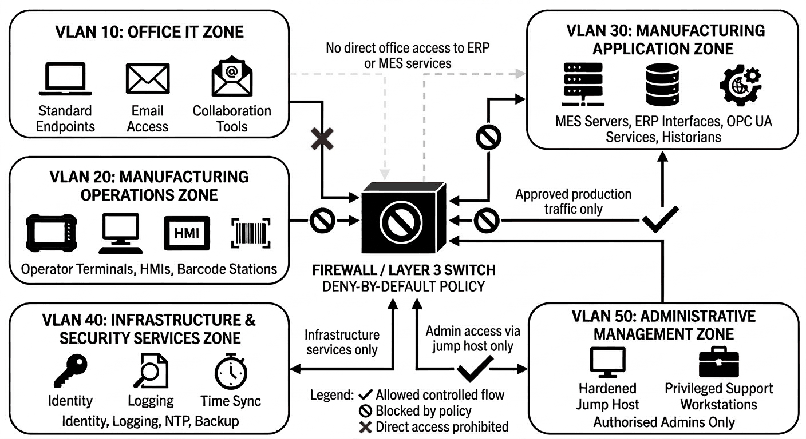
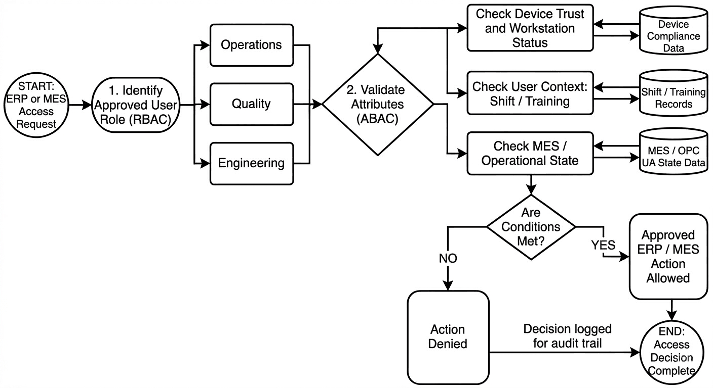

Securing LAN Access to ERP & MES Systems in Regulated Manufacturing
A defence-in-depth access-control architecture for the systems that run a regulated medical-device plant, built around NIST CSF 2.0, network segmentation and hybrid RBAC/ABAC enforced through OPC UA.
The problem
In a regulated medical-device plant, the Enterprise Resource Planning (ERP) and Manufacturing Execution Systems (MES) don't just hold business data; they run production, record material traceability and hold the quality records an auditor will ask for. A weakness in LAN access to those systems is simultaneously a cybersecurity risk, an operational-continuity risk and a compliance exposure.
My BSc capstone designed a defence-in-depth architecture to control that access: secure enough to resist compromise and insider misuse, but without interfering with production continuity or safe operation. The work was grounded in a critical review of two key papers on access control for smart manufacturing (Leander et al., 2020, 2023), whose central finding shaped the whole design: dynamic manufacturing needs both expressive access policy and lightweight, standards-aligned enforcement, or the policy stays theoretical.
Framework
The design is structured around the six functions of the NIST Cybersecurity Framework 2.0 (Govern, Identify, Protect, Detect, Respond, Recover), chosen because the goal was not just to harden a network but to build a governable security design that also aligns with the direction of the EU NIS2 Directive. A core ICS principle runs through it: safety-critical functions (emergency stops, alarms, safe-state controls) stay logically independent of the central authorisation workflow, so a failure of IT services never compromises safe operation.
1 · Segment the network
The LAN is divided into five trust zones so that ordinary office devices never talk directly to sensitive manufacturing systems. Traffic between zones is governed by a deny-by-default firewall / Layer-3 policy: office IT has no direct path to MES application servers, privileged administration must originate from a hardened jump host, and ERP integration is restricted to documented business flows only.

2 · Govern with RBAC, enforce with ABAC
Role-Based Access Control is the governance baseline; it maps cleanly onto training records, management approval and segregation of duties, which is what a regulated environment audits against. Three functional roles are defined: Operations, Quality and Engineering, each limited to the functions their work requires (only Quality can release a batch from hold; only Engineering can change process configuration, and only in an approved maintenance state).
RBAC alone is too static for a live production line, so Attribute-Based Access Control is layered on top. A user in a valid role can still be denied if the request comes from an unmanaged device, falls outside an approved shift window, or arrives when the equipment or batch is in the wrong operational state. This gives stronger least-privilege without losing the audit clarity of roles.

3 · Enforce at three layers
Enforcement uses the standard Policy Enforcement / Decision / Information / Administration Point (PEP/PDP/PIP/PAP) model, with enforcement points at three layers for defence in depth: the application entry layer for ERP/MES, the OPC UA service or gateway (which already supports role-based security and session mapping, per OPC UA Part 18), and the network itself through VLAN and firewall policy. Because OPC UA natively supports RBAC and token-based mechanisms, the design leverages existing protocol capability rather than bespoke enforcement operators would distrust.
4 · Prove it holds: feasibility testing
The literature's clearest warning is that access-control designs which are sound on paper fail in deployment on latency, availability or auditability. The testing plan targets exactly those:
- Latency: compare baseline vs secured MES transaction times to confirm authorisation checks don't delay production.
- Failure modes: simulate loss of central authentication and policy services; new privileged actions must fail closed while safety functions stay independent and available.
- Auditability: verify the design produces inspection-ready evidence: who accessed what, when, from where, under which role, with what result, and with approval linkage on high-impact actions.
Why it matters
Securing ERP/MES access in regulated manufacturing can't be solved by any single control. Network design, identity governance, enforcement architecture and operational testing have to work together, and the whole thing has to be built around industrial priorities: availability, safe operation, controlled change and auditability. That intersection of compliance evidence and security engineering is exactly where my Quality background and my security work meet.
Key references
- Leander, B., et al. (2020). Access Control for Smart Manufacturing Systems.
- Leander, B., et al. (2023). Access Control Enforcement Architectures for Dynamic Manufacturing Systems. IEEE ICSA.
- NIST (2024). The NIST Cybersecurity Framework (CSF) 2.0.
- OPC Foundation. UA Part 18: Role-Based Security.